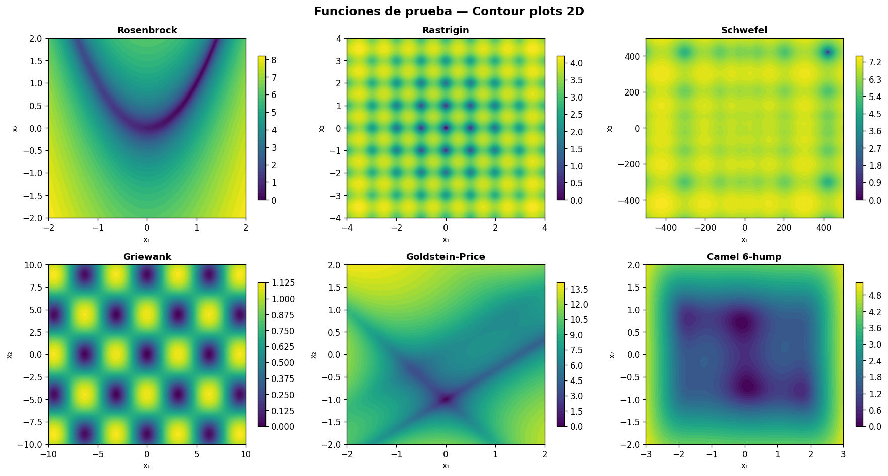
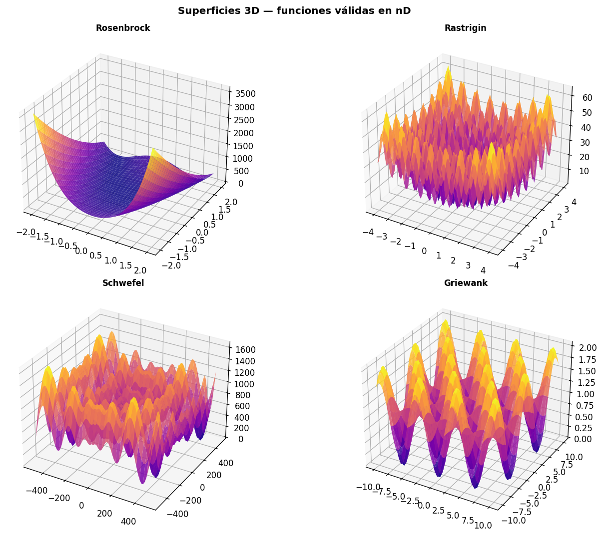
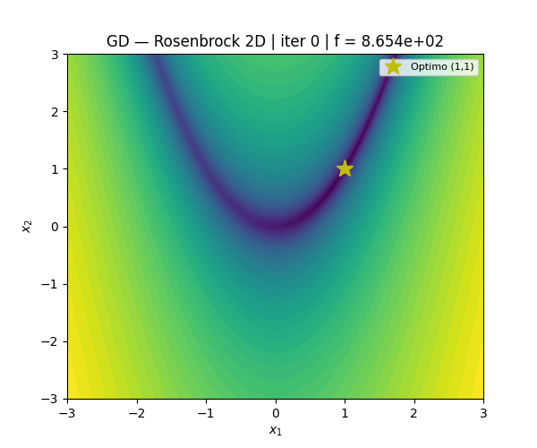
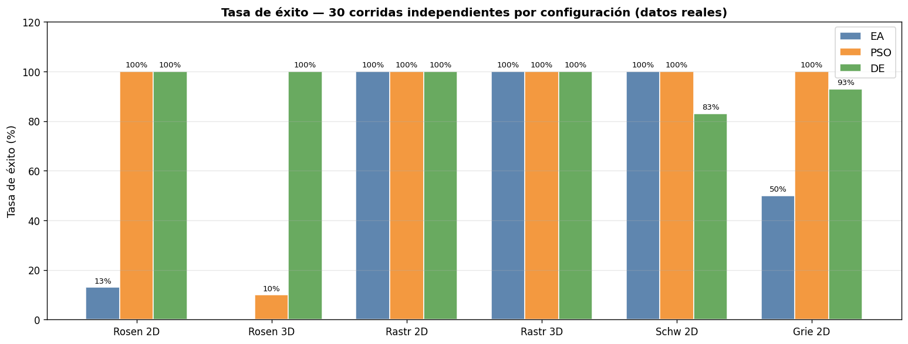
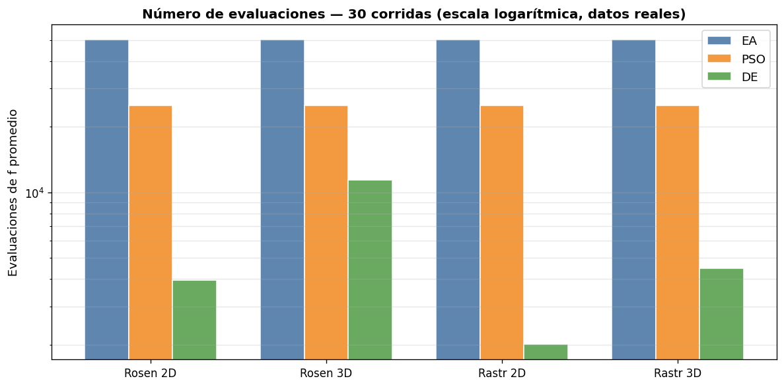
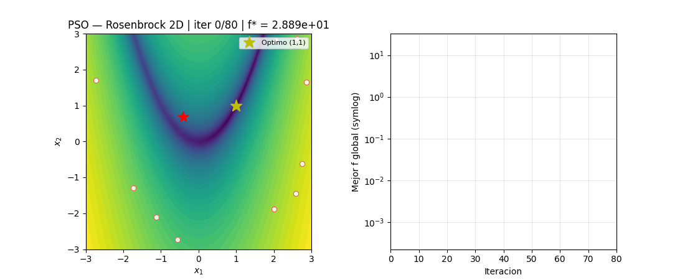
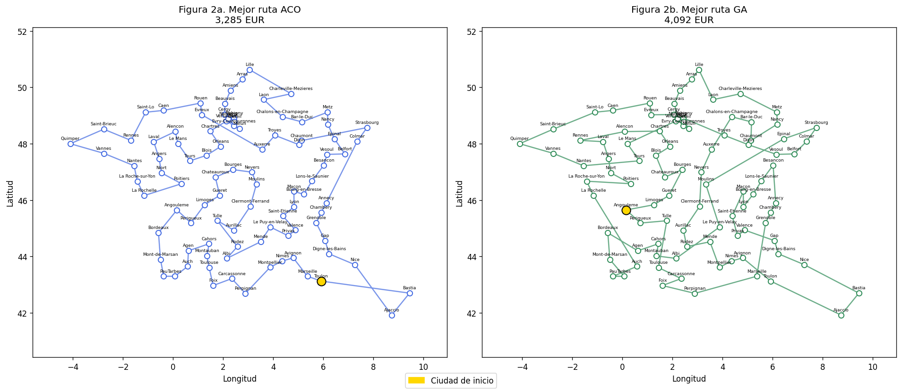
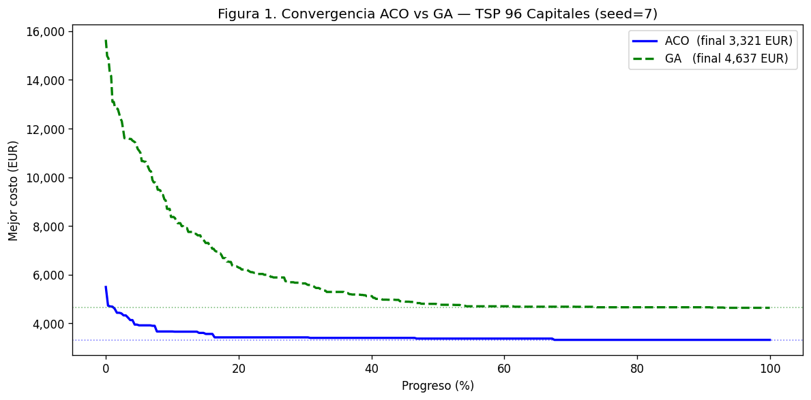

Rosenbrock
show_chart
Unimodal · 2D y 3D · $[-5,5]^n$
$$f(\mathbf{x})=\sum_{i=1}^{n-1}\bigl[100(x_{i+1}-x_i^2)^2+(1-x_i)^2\bigr]$$
Optimo: $f(\mathbf{1})=0$. Valle parabolico estrecho y curvado.
GD, EA, PSO y DE sobre seis funciones clasicas en 2D y 3D — 900 experimentos reales. TSP para los 96 departamentos de la Francia metropolitana con ACO y GA.
DE: 100% exito en Rosenbrock con 3 945 evaluaciones — ACO: 3 285 EUR en el TSP Francia
Desde unimodal con valle estrecho hasta multimodal con minimo global descentrado. Cada funcion desafia de forma distinta a los algoritmos.

Unimodal · 2D y 3D · $[-5,5]^n$
Optimo: $f(\mathbf{1})=0$. Valle parabolico estrecho y curvado.
Multimodal · 2D y 3D · $[-5,5]^n$
Optimo: $f(\mathbf{0})=0$. $\approx 10^n$ minimos locales.
Multimodal · 2D y 3D · $[-500,500]^n$
Optimo: $f(420.97,\ldots)\approx 0$. Minimo lejos del centro.
Multimodal · 2D y 3D · $[-600,600]^n$
Optimo: $f(\mathbf{0})=0$. Minimos locales uniformes.
Multimodal · solo 2D · $[-2,2]^2$
Optimo: $f(0,-1)=3$. Paisaje muy irregular.
Bimodal · solo 2D · $[-3,3]\times[-2,2]$
Optimo: $f^*\approx -1.0316$. Dos minimos globales simetricos.


30 corridas independientes por metodo × funcion × dimension. Datos reales de resultados_heuristicos.json.



| Metodo | Funcion | Dim | $f^*$ media | $f^*$ mejor | Exito | Evals prom. |
|---|---|---|---|---|---|---|
| EA | Rosenbrock | 2D | 1.01e-02 | 1.65e-08 | 13% | 50 100 |
| PSO | Rosenbrock | 2D | 1.58e-07 | 1.89e-10 | 100% | 25 000 |
| DE | Rosenbrock | 2D | 4.98e-30 | 4.98e-30 | 100% | 3 945 |
| EA | Rosenbrock | 3D | 4.27e-01 | 3.77e-04 | 0% | 50 100 |
| PSO | Rosenbrock | 3D | 4.90e-02 | 6.10e-06 | 10% | 25 000 |
| DE | Rosenbrock | 3D | 9.96e-30 | 9.96e-30 | 100% | 11 401 |
| DE | Rastrigin | 2D | 0.00 | 0.00 | 100% | 2 007 |
| DE | Goldstein-Price | 2D | 3.000 | 3.000 | 100% | 965 |
| DE | Camel 6-hump | 2D | -1.0316 | -1.0316 | 100% | 869 |
El operador mutGaussian de DEAP no restringe los individuos al dominio $[-500,500]^n$. Fuera del dominio, Schwefel devuelve valores muy negativos. Los resultados de EA en Schwefel reflejan exploracion fuera del dominio, no convergencia al minimo global real en $x^*\approx420.97$.
Modelo de costo: 0.4540 EUR/km (Renault Clio SP95 + peajes ASFA + tiempo SMIC a 90 km/h).
| Metodo | Media (EUR) | Std (EUR) | Mejor (EUR) | Peor (EUR) | CV (%) | Tiempo (s) |
|---|---|---|---|---|---|---|
| ACO | 3 355 | 42 | 3 285 | 3 446 | 1.26 | 831 |
| GA | 4 553 | 222 | 4 092 | 5 120 | 4.87 | 160 |


El vector de mutacion $\mathbf{v}=\mathbf{x}_{r1}+F(\mathbf{x}_{r2}-\mathbf{x}_{r3})$ escala adaptativamente: cuando la poblacion converge, $F\cdot\Delta\mathbf{x}$ se vuelve pequeno automaticamente.
EA falla en Rosenbrock porque cxBlend genera hijos fuera del valle. PSO falla en 3D porque las velocidades no se adaptan a la geometria local del valle estrecho.
DE domina aqui, pero Wolpert & Macready (1997) demuestran que ningun algoritmo es universalmente mejor. DE fallaria en espacios discretos, con presupuesto ≤100 evals (Optimizacion Bayesiana lo supera) o con restricciones duras.
| ACO | GA | |
|---|---|---|
| Memoria | Explicita $\tau_{ij}$ | Implicita: genes |
| Costo | $O(n^2)$ | $O(N_{pop}\cdot n)$ |
| CV | 1.26% | 4.87% |
| Velocidad | 831 s | 160 s |
GD sobre las 6 funciones con retroceso Armijo. Histogramas $n=100/500/1000$.
open_in_new Ver en GitHub30 corridas sobre las 6 funciones en 2D y 3D. Graficas comparativas.
open_in_new Ver en GitHubACO y GA sobre los 96 departamentos. Modelo de costo EUR. GIFs de convergencia.
open_in_new Ver en GitHubgit clone https://github.com/AndresGuido9820/optimizacion-metaheuristicas.git
cd optimizacion-metaheuristicas
pip install -r requirements.txt
# Experimentos heuristicos (~20 min)
python scripts/heuristicos.py
# TSP Francia (~15 min)
python scripts/tsp_france.py
# Reporte Word
python scripts/generar_reporte_word.pynumpy
scipy
matplotlib
deap # algoritmos evolutivos
pyswarms # PSO
python-docx # reporte Word
pandas